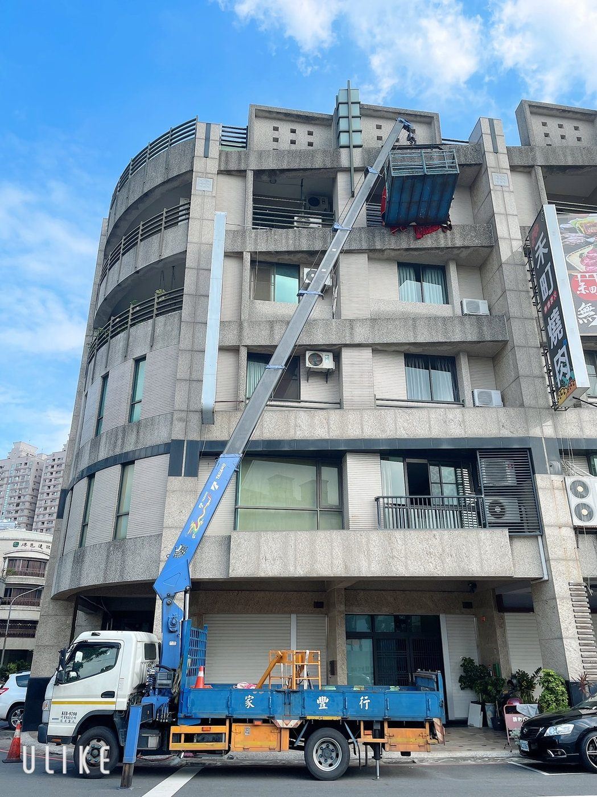
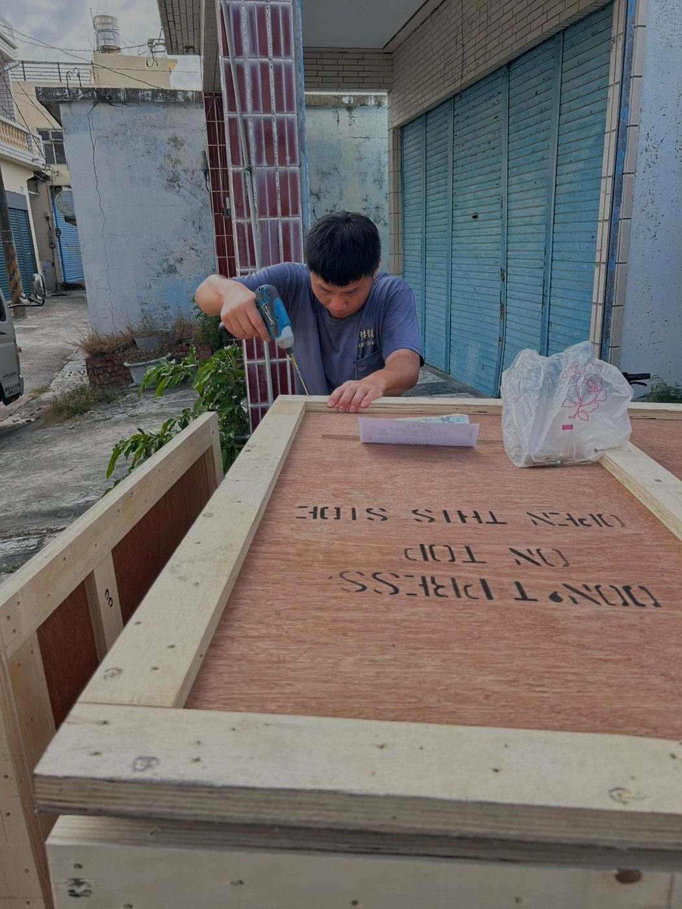
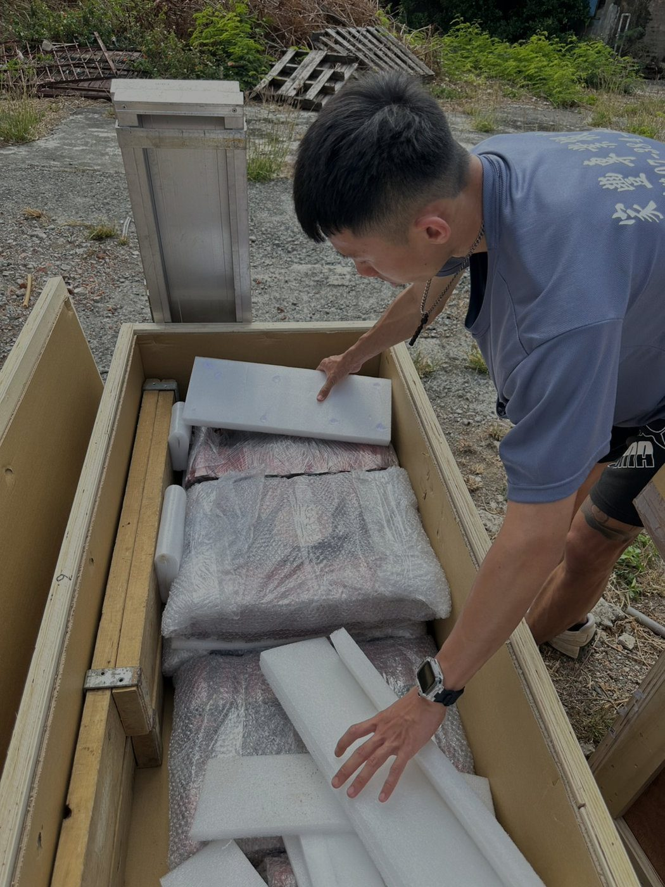
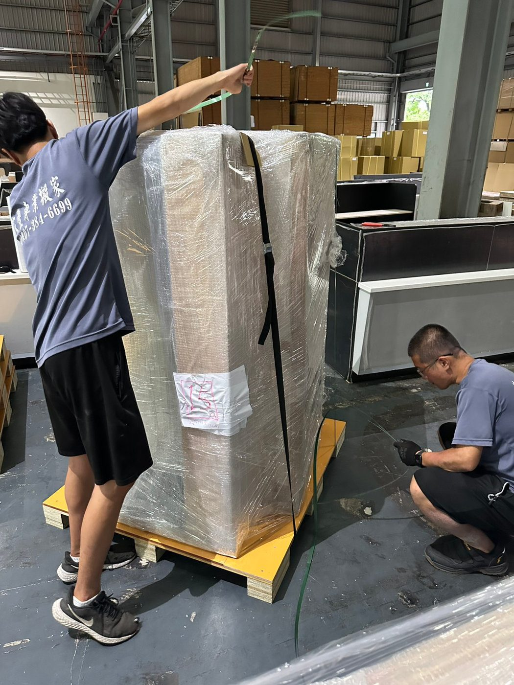
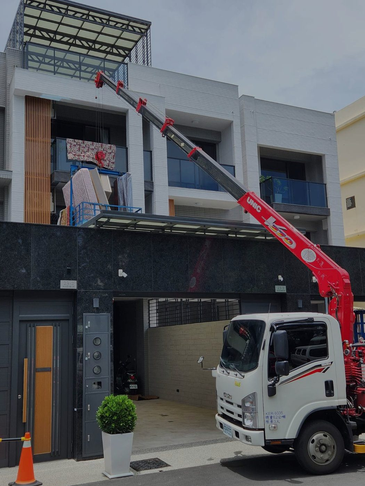
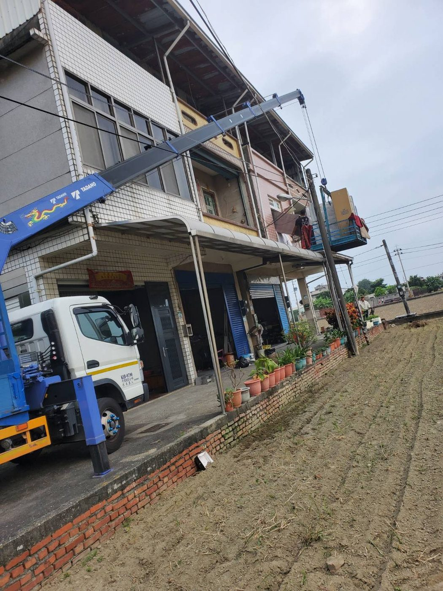
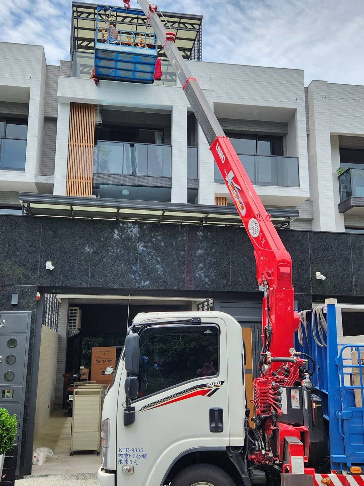
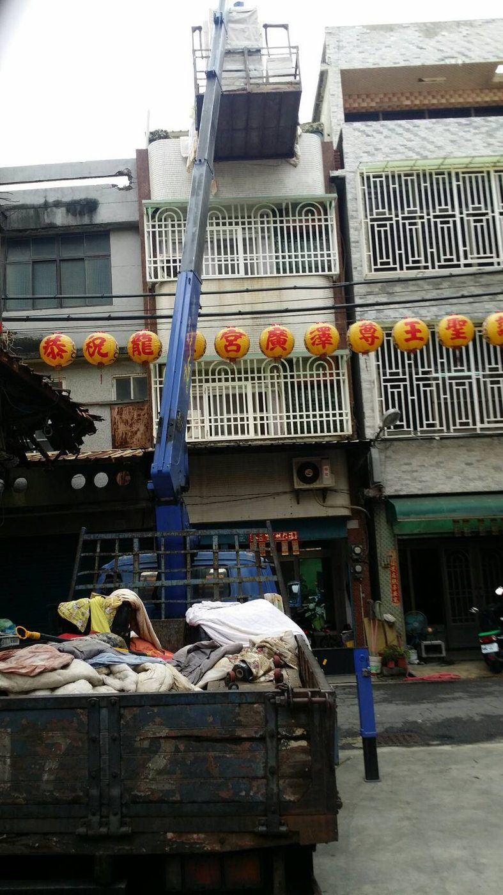

家豐屏東吊車搬家
24H 預約專線08-778-0709
24H 預約專線：0953-111-469｜LINE ID：@816obfut
公司地址：家豐屏東吊車精緻搬家行位於屏東縣內埔鄉
屏東在地搬家首選，從老家到新居都安心
換新家，是生活新的開始。家豐搬家深耕南部多年，提供屏東搬家、住宅搬遷、商辦搬運與吊車搬家服務，從市區大樓到鄉鎮透天，都能快速到府協助。



屏東搬家公司－家豐搬家
搬家不只是搬運物品，更是生活的新開始。家豐搬家深耕屏東多年，熟悉各鄉鎮地形與社區動線，無論您在屏東市、潮州、萬丹、麟洛、東港或林邊，我們都能迅速到府服務。
我們了解屏東的氣候、街道與住宅型態，熟悉無電梯搬家、透天厝搬運、鄉村地區大型家具進出等特殊需求，更懂在地搬家的每一步。
從小套房到透天厝、從家庭搬遷到公司搬運，每一趟搬家都由專業團隊親自服務，透明報價、不亂加價、完整防護措施，是許多屏東家庭與店家安心選擇的理由。
SERVICES
專業住宅搬遷｜吊車搬運｜系統家具拆裝｜企業與工廠搬遷｜代客打包與精緻搬家

針對重視安全、品質與細節的客戶，提供全程客製化搬遷方案。

家豐專業團隊，讓搬家更輕鬆。

從前期現場評估、物品分類打包、設備拆卸到精密搬運，全程由經驗豐富的搬運團隊規劃執行，讓您能在最短時間內恢復營運。
家豐吊車搬家團隊，省力又安心
搬家遇到高樓層、大型家具或無電梯的住宅，別擔心！家豐搬家提供屏東地區專業的吊車搬家服務，以合格吊車設備與安全吊掛技術，協助您輕鬆完成高難度搬運。
無論是沙發、鋼琴、大型家電、系統家具或工廠機具，我們的專業團隊都能依現場環境，規劃最佳吊掛角度與安全路線，並使用防護繩索、固定墊、保護毯等設備。
家豐搬家熟悉屏東市、潮州、萬丹、東港、林邊等地的社區環境與街道空間，能迅速安排吊車進場與交通動線協調，從評估、報價、吊掛到擺放，全程專業、穩定又安心。




家豐專業團隊到府處理更省心
搬家後留下的舊家具、雜物、裝潢廢料或大型垃圾，交給專業的我們來處理。家豐搬家提供屏東地區合法的廢棄物清運服務，由專業團隊與合格車輛負責清運、分類與處理，讓您的居家、辦公室或工廠空間，迅速恢復整潔狀態。
全程採合法管道清運、分類回收，透明報價、不亂加價、服務範圍涵蓋屏東全區。
屏東搬家區域
家豐搬家深耕屏東多年，提供全區專業搬家服務，無論您位於屏東市、潮州、萬丹、東港、里港、林邊、枋寮、內埔或恆春等地，我們皆可迅速到府估價、專業搬運。
家豐屏東吊車精緻搬家行位於屏東縣內埔鄉
Contact us
24H 預約專線：0953-111-469｜LINE ID：@816obfut
公司地址：家豐屏東吊車精緻搬家行位於屏東縣內埔鄉
812 高雄市小港區高坪五路 142 巷 6 弄 6 號